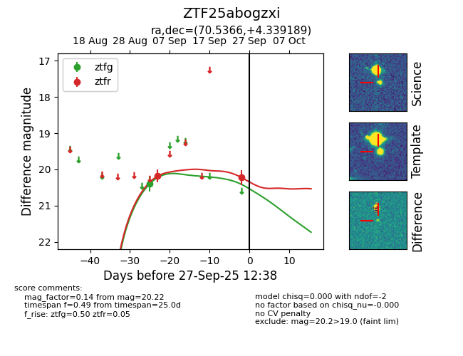
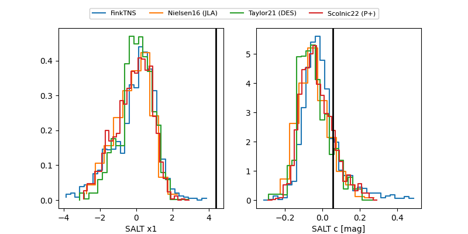

FINK: ZTF25abogzxi
Lasair: ZTF25abogzxi
ALeRCE: ZTF25abogzxi
ZTF25abogzxi (ztf,fink)
equatorial (ra, dec) = (70.5366,+4.33919)
galactic (l, b) = (192.7066,-26.10414)


last ztfg=20.40, ztfr=20.22
1 ztfg, 2 ztfr detections